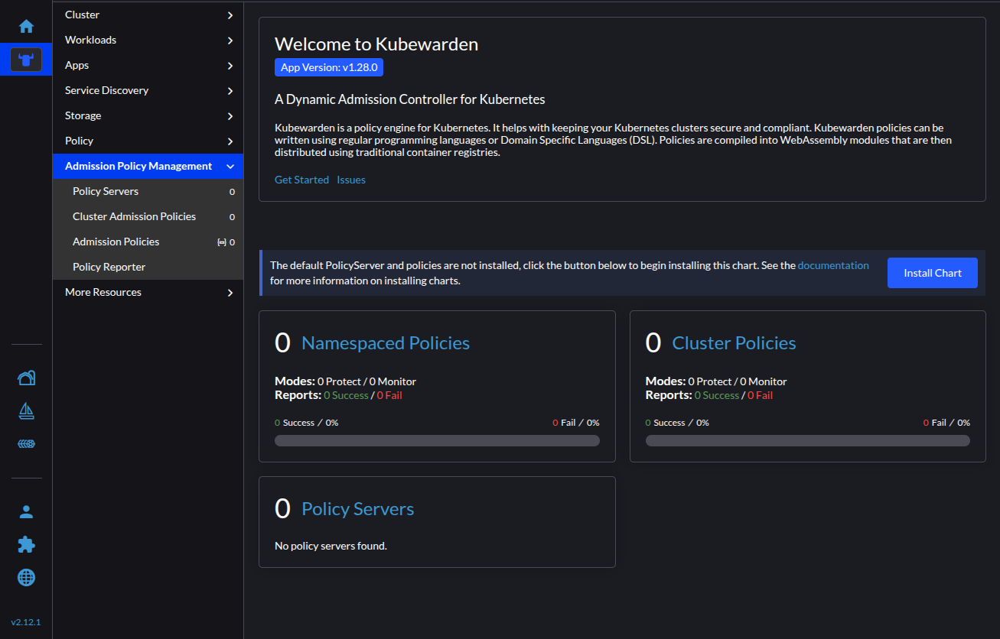
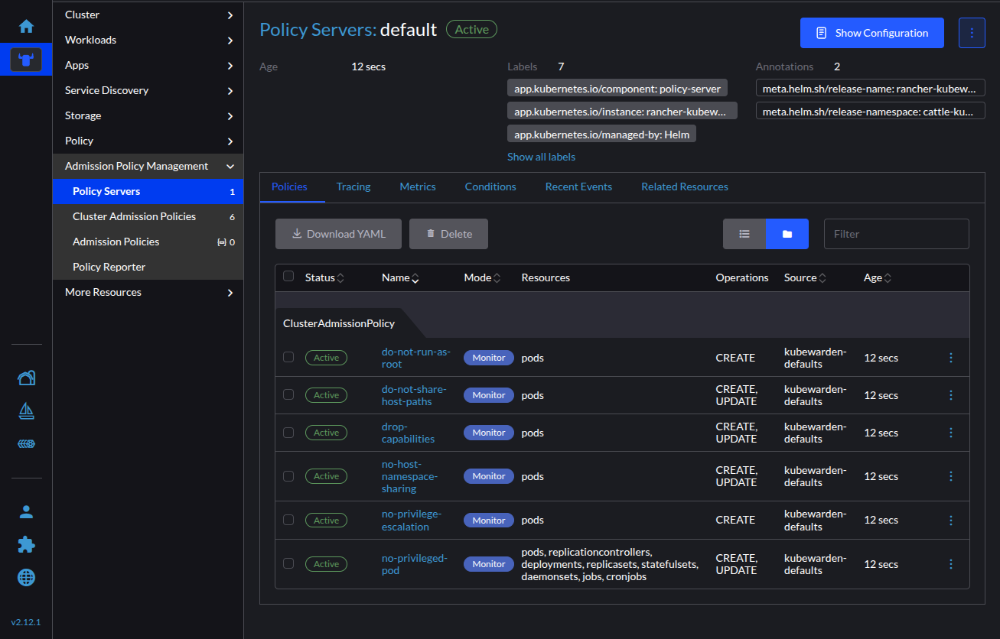
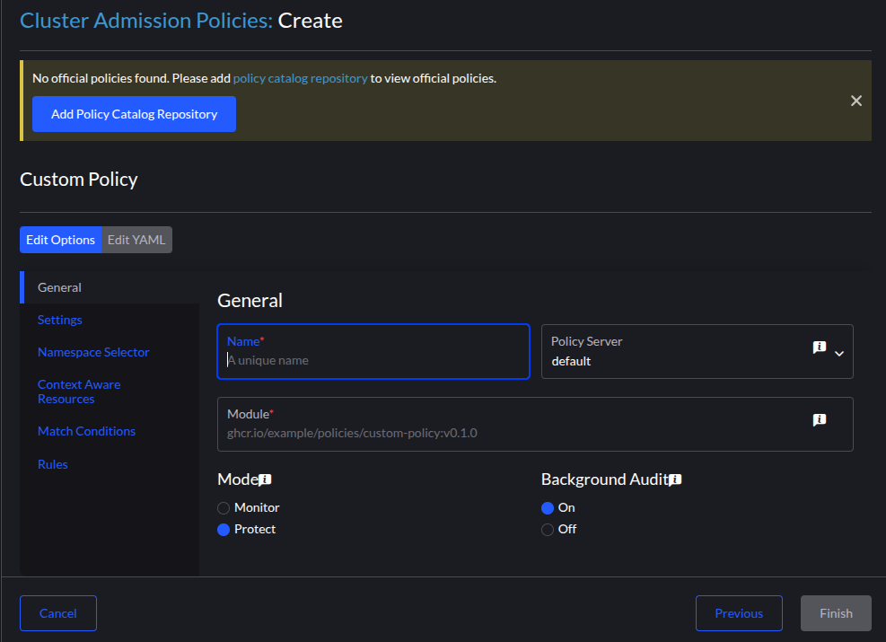
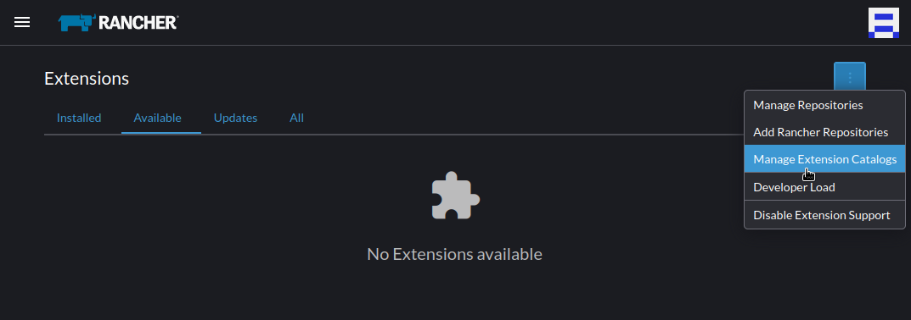
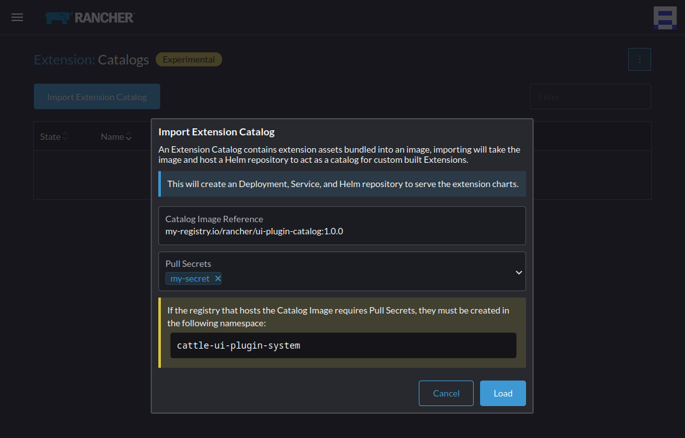

|
Este documento foi traduzido usando tecnologia de tradução automática de máquina. Sempre trabalhamos para apresentar traduções precisas, mas não oferecemos nenhuma garantia em relação à integridade, precisão ou confiabilidade do conteúdo traduzido. Em caso de qualquer discrepância, a versão original em inglês prevalecerá e constituirá o texto official. |
|
Esta é uma documentação não divulgada para Admission Controller 1.34-dev. |
Guia rápido de extensão da UI do Rancher
Esta seção descreve a instalação da UI SUSE Security Admission Controller como uma extensão do Rancher Manager.
Instalar Admission Controller Extensão da UI
Você instala a UI Admission Controller como uma extensão global, no entanto, você instala o controlador Admission Controller através da UI do Rancher como um recurso com escopo de cluster.
|
Para instalações air-gapped, siga estes passos. |
Na página de extensões, selecione o botão "Habilitar" e escolha a opção para adicionar o repositório de extensões do Rancher. Quando habilitado, o item de extensão "Admission Controller" aparece automaticamente. Selecione este item para instalar a extensão. Uma vez instalada, você pode instalar Admission Controller no cluster necessário.
Instale o Admission Controller
Seguindo os passos anteriores, dentro do seu cluster, um novo item aparece no menu lateral para Admission Controller. Esta página do painel orienta você pelo processo de instalação, completando os pré-requisitos.
|
Durante a etapa "Instalação do App" do assistente de instalação, o botão "Instalar Admission Controller" pode permanecer desativado. Se isso acontecer, atualize a página e navegue de volta para esta etapa. |
Pós-instalação
Após completar a instalação, a página do painel e o menu lateral agora contêm novos itens, a saber, Servidores de Políticas, Políticas de Admissão de Cluster e Políticas de Admissão. A partir daqui, você pode criar Servidores de Políticas e Políticas para controlar o comportamento dentro do seu cluster.
Visão do Painel 
Habilitando o Servidor de Políticas padrão e políticas
Na página do painel, você pode selecionar o botão "Instalar Gráfico" para instalar o kubewarden-defaults gráfico Helm. Este gráfico inclui o Servidor de Políticas padrão e algumas políticas selecionadas.
Após instalar o gráfico, você pode visualizar os detalhes do Servidor de Políticas padrão com as políticas relacionadas em uma tabela classificável.
Visualização de detalhes do Servidor de Políticas 
Criando políticas
Ao criar políticas, você inicialmente recebe a opção "Política Personalizada" na Grade de Políticas. Forneça as informações necessárias para o Nome, Módulo e Regras da sua política. É recomendável adicionar o repositório do Catálogo de Políticas para acessar as políticas oficiais do Admission Controller.
Criando uma política personalizada 
Recursos adicionais
Siga as instruções para incluir Monitoramento ou Rastreamento.
Instalação air-gapped
Como Admission Controller é uma Extensão Oficial do Rancher, a equipe do Rancher fornece um mecanismo para gerar automaticamente uma Imagem do Catálogo de Extensões. Isso é adicionado ao arquivo rancher-images.txt ao instalar o Rancher Manager para instâncias air-gapped.
Uma vez que esta imagem é espelhada para um registro acessível ao seu cluster air-gapped, você pode importar a imagem dentro da UI do Rancher. Isso cria um repositório local de Helm com o gráfico UI Admission Controller para instalação.
Etapas de instalação
-
Criar um segredo de registro dentro do namespace
cattle-ui-plugin-system. Insira o domínio do endereço da imagem no campo Nome do Domínio do Registro. -
Navegue de volta para a página Extensões (por exemplo,
https://cluster-ip/dashboard/c/local/uiplugins). -
No canto superior direito, selecione Gerenciar Catálogos de Extensões.

-
Selecione o botão Importar Catálogo de Extensões. imagem:ui_airgap_02.png[Importar Catálogos]
-
Insira o endereço da imagem no campo Referência da Imagem do Catálogo.
-
Selecione o segredo que você acabou de criar no menu Pull Secrets.

-
Clique em Carregar. A extensão agora estará Pendente.
-
Volte para a página Extensões.
-
Selecione a aba Disponíveis e clique no botão Recarregar para garantir que a lista de extensões esteja atualizada. imagem:ui_airgap_04.png[Instalar Admission Controller]
-
Encontre a extensão Admission Controller que você acabou de adicionar e selecione o botão Instalar.